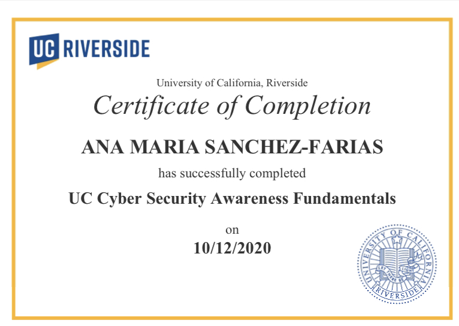
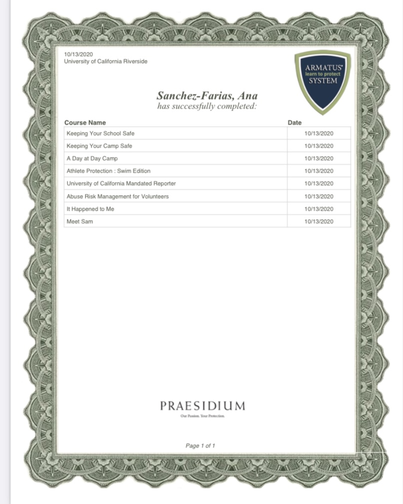
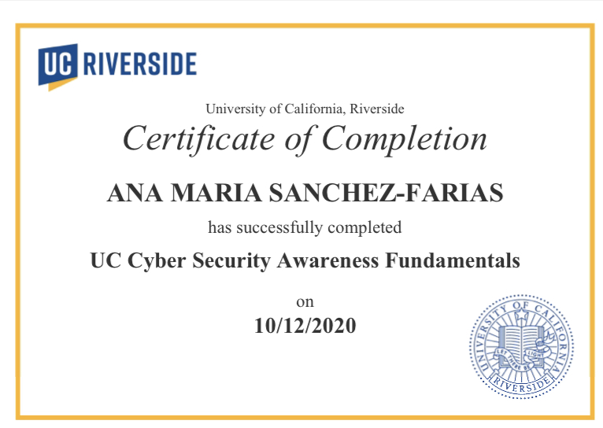
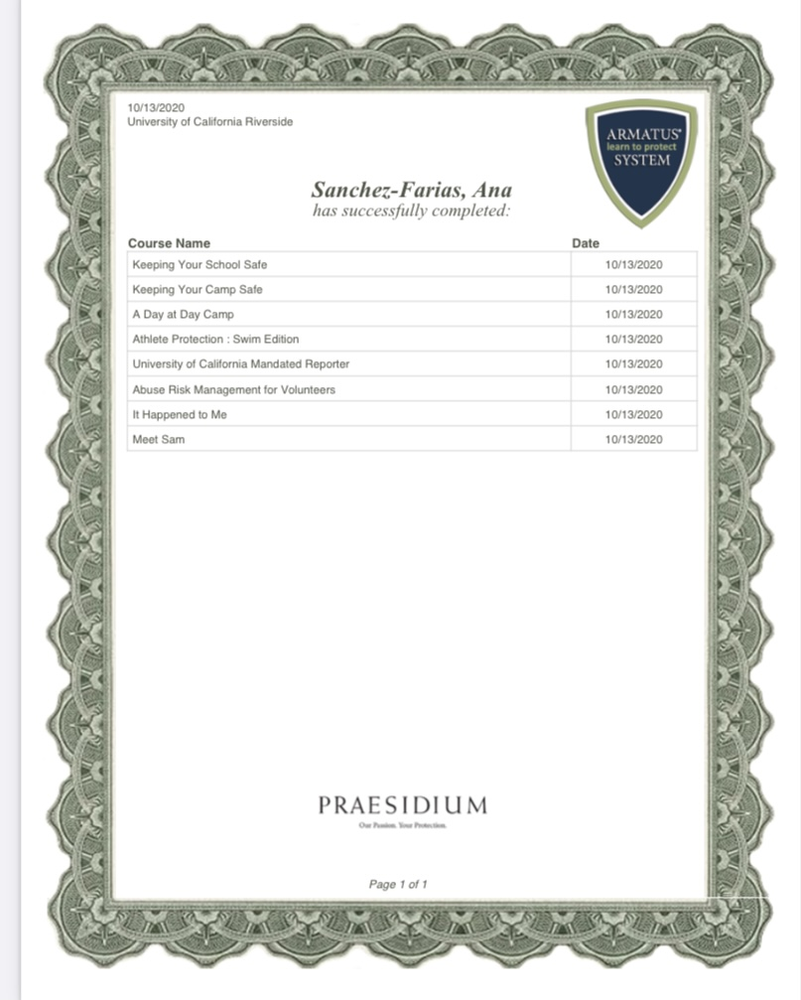

Ana Sanchez-Farias
Hello, my name is Ana Sanchez-Farias and I’m a second-year student at the University of California, Riverside. I am currently double majoring in Spanish and English with an interest in getting a minor in Education. My future aspirations are to go to a graduate school where I can get my Master’s in Education as well as become a credentialed teacher. After that, I hope to become a teacher and work in that career for a while.
My professional experience is that I have worked as a tutor for most of my life. Currently, I am a tutor with the University Eastside Community Collaborative (UECC) Americorps where I volunteer as a tutor of the Riverside community. The school I currently tutor with is Lake Mathew’s Elementary and I work with a group of ten, second-grade students. Typically I hold Google meets with the students and help them in their struggle areas. Our key focuses are in English Language Arts and in Math. They currently learn these subjects under common core lesson plans. Most of my work is guiding students towards learning what they need. Often times it’s important to remember that when working with these students I need to formulate a plan that works for each individual student best. Most have their own learning styles that they benefit from and I need to stick to that when planning the lesson plan. Overall, this job has given me insight into what teaching would look like once I get there.
Another useful experience I have is that I’ve worked as a Peer Mentor in the Chicano Student Programs. As a Peer Mentor, I work with first-year students who just started out at the University of California, Riverside, and need some mentorship. Typically with my mentees, I go over important things that most first years do not learn about until later in their time at the university. I also become a beacon of support for whatever they might need since some students do not get that type of support at home. In COVID time, meeting up with my mentee is more a zoom class and we go over any important information or just catch up. We meet up once every two weeks for thirty minutes and talk about whatever works best for that session. Sometimes students just need someone to talk to that understands what they’re going through because there isn’t always someone like that at home. Sometimes before mentee meetings, I talk about any important resources the student might need and offer them up as additional support. Overall, working as a mentor for my mentee has taught me a lot about problem-solving and working with people from different backgrounds.
Experience
Tutor
• Tutored Students from K-6 grade
• Community Service Hours
• Experience with Zoom and Google Meets
Warehouse Worker
• Put labels on boxes
• Sent orders out
Education
UC Riverside
Portfolio



 